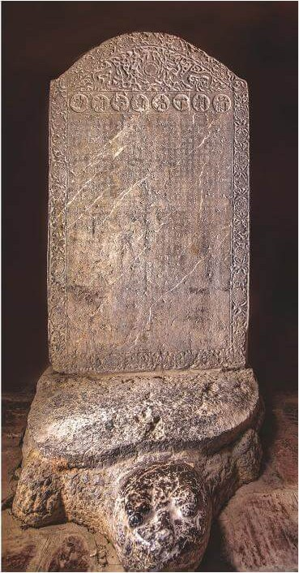

CỐ ĐÔ HOA LƯ
丁王廟の碑亭


丁先皇廟の石碑システムは、非常に貴重な「石の史料庫」です。
現在の碑亭には、石に彫刻され漢字で書かれた3つの古い石碑が保存されています。
これら3つの石碑は、それぞれ異なる歴史的時期に彫られ、独自の歴史的痕跡を残しています。
第一に、弘定9年（1608年）の石碑：この石碑は、都元帥総国政尚父平安王（即ち鄭松）の功徳を記録したものです。彼は前朝の聖王の功徳を深く敬い、国家の繁栄を祈願して祭祀のために七畝の田んぼを慎重に寄進しました。同時に、廟の修復における封郡公・裴時中（ブイ・ティ・チュン）と地元住民の功労も記録されています。
次に、正和17年（1696年）の石碑：これは最大かつ最も独自の芸術的価値を持つ石碑です。特筆すべきは、制作者の氏名が完全に記録されている唯一の石碑であることです。銘文は翰林院の官職にあった阮（グエン）氏の進士によって起草され、漢字部分は金剛寺の住持である僧侶によって書かれ、直接彫刻を施した名工は清化（タインホア）省東山（ドンソン）県安劃（アンホアック）社の職人、黎仁富（レ・ニャン・フー）です。
石碑の装飾芸術を探求すると、荘厳な宮廷の性質と自由奔放な民間精神の奇跡的な結合に驚かされることでしょう。石碑の額には「双鳳朝日（二羽の鳳凰が太陽に向かう）」の模様が際立っています。その周りには対称的な花や葉の模様、絡み合う龍が配置され、その中には猿の家族が互いに背負い合う温かく親しみやすい姿も織り交ぜられています。
最もユニークなのは、石碑の台座の段差部分に生き生きと浮き彫りにされた「双鼠朝蟹（二匹のネズミがカニに向かう）」の模様です。カニとネズミは本来、田畑や農民の素朴な生活に結びついた動物ですが、ここでは廟の石碑に厳かに装飾されており、古代の彫刻芸術において比類のない組み合わせとなっています。

正面の素朴で大衆的な雰囲気とは対照的に、石碑の背面には王の威厳を象徴する柔らかくうねる龍の姿が彫刻されています。しかし、威厳を持って現れる代わりに、この龍は石碑の後ろに隠れています。朝廷の荘厳で神聖な雰囲気と村の生活のユーモアが絶妙に融合していることこそが、この石碑に唯一無二の価値をもたらしているのです。

第三に、紹治3年（1843年）の石碑：これは明命18年（1838年）の出来事を記録したものです。当時、廟が破損したため、省の役人である陳文中（チャン・ヴァン・チュン）と裴公先（ブイ・コン・ティエン）が朝廷に奏上し、王から修復のために500貫の資金を賜りました。その恩を永遠に伝えるため、紹治3年にこの石碑が建てられました。
丁先皇廟の石碑システムは、過去からの「手紙」であり、先人たちの熱意と道徳を完全に保存していると断言できます。長い時を経ても、これらの石の宝物は民族の誇りを静かに育み、私たち一人一人に文献の起源を思い起こさせ、国の独立という神聖な価値をさらに大切にするよう呼びかけています。